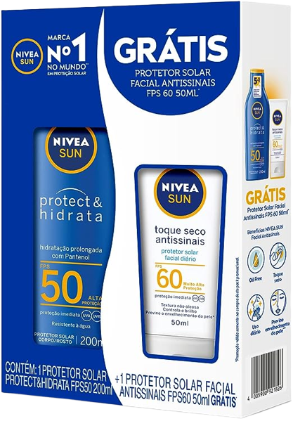
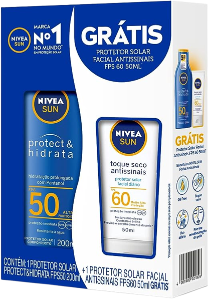

Como a pele reage ao sol
Desvendando o protetor solar
Essa categoria possui uma alta sensibilidade ao sol, se bronzeiam pouco e se queimam com facilidade. Pessoas que possuem esse tipo de pele geralmente tem cabelos claros, loiros ou castanhos. Por conta da sensibilidade de sua pele pessoas com esse fototipo precisa cuidar bastante de sua pele e expor o mínimo que puder ao sol. É indicado usar protetores com fator de proteção solar com no mínimo fator 50 para se proteger. Os protetores com esse alto nível de proteção levam na composição óxido de zinco e dióxido de titânio.
 
